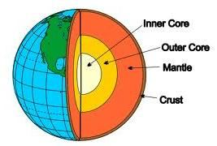

The Jews were given many laws, but ultimately, the majority felt these laws were a heavy yoke around their necks. After Solomon's death, they revolted, became divided, and were scattered across the world. The Quran prescribes a few laws with punishments, such as for theft, adultery, fornication, spreading scandal, and creating disorder in society. These laws, which include prescribed punishments, can be enacted through the courts and can be termed as Islamic Laws. The Quran is a Book of Guidance, not a Book of Law. The Torah, on the other hand, is a Book of Law, which is not meant for us to follow. The Quran addresses many other offenses, for which punishments would be given in the afterlife. Can the Highest Islamic Leadership (Caliph) or a team under him devise earthly punishments for these offenses? I believe it would be wrong to devise punishments for these offenses, as Allah has not prescribed. For example, one should not be punished for breaking the hijab, because the Quran has not prescribed a punishment for this offense. Many laws are required to govern a country. God has not provided all the laws needed to maintain balance in societies. So, what 'balance' is the verse under discussion referring to? I believe it refers to the balance of laws. Humans may view adultery, fornication, spreading scandal, and similar actions as petty offenses, or may not consider them offenses at all. For example, if fornication occurs with the consent of both the man and woman, it is not considered a crime in most countries. However, it is a crime in the sight of God. Thus, the Quran has prescribed punishments for certain offenses to maintain balance between divine laws and manmade laws. The offenses for which the Quran has prescribed punishments in this earthly life negatively and gravely affect religion, society, and psychological well- being of a person. If the Quran has prescribed a punishment for an offense, the punishment must be carried out. However, a judge may choose to forgive, as the Quran allows for the possibility of forgiveness. The Highest Islamic Leadership or Caliph should monitor whether the governments are promulgating these laws through the courts. The Sultan Caliphs of old required many laws to govern their empires. They formulated these laws through their favored religious scholars and promulgated them as religious laws. Many of these laws are known as Fiqh (the theory or philosophy of Islamic law, based on the teachings of the Quran and the traditions of the Prophet). These scholars derived the laws from their often erroneous understanding of the Quran, the Hadith, their personal interpretations, and Ijma (consensus). They also determined the punishments. However, the Quran has not prescribed punishments for many of these offenses. Therefore, the Sultan Caliphs and the Faqihs were responsible for judging the severity of the offenses and the punishments they prescribed and promulgated. Allah is the Most Merciful to His creatures. In matters related to our day-to-day lives, the Quran instructs a judge to be just:
ইহুদিদের অনেক আইন দেওয়া হয়েছিল, কিন্তু শেষ পর্যন্ত, সংখ্যাগরিষ্ঠরা মনে করেছিল যে এই আইনগুলি তাদের ঘাড়ে একটি ভারী জোয়াল। সলোমনের মৃত্যুর পর, তারা বিদ্রোহ করে, বিভক্ত হয়ে পড়ে এবং সারা বিশ্বে ছড়িয়ে পড়ে। কুরআন চুরি, ব্যভিচার, ব্যভিচার, কলঙ্ক ছড়ানো এবং সমাজে বিশৃঙ্খলা সৃষ্টির মতো শাস্তি সহ কয়েকটি আইন নির্ধারণ করে। এই আইন, যার মধ্যে নির্ধারিত শাস্তি রয়েছে, আদালতের মাধ্যমে প্রণয়ন করা যেতে পারে এবং ইসলামিক আইন হিসাবে আখ্যায়িত করা যেতে পারে। কুরআন একটি পথনির্দেশের বই, আইনের বই নয়। অন্যদিকে, তাওরাত একটি আইনের বই, যা আমাদের অনুসরণ করার জন্য নয়। কুরআন আরও অনেক অপরাধের সম্বোধন করে, যার শাস্তি পরকালে দেওয়া হবে। সর্বোচ্চ ইসলামী নেতৃত্ব (খলিফা) বা তার অধীনে একটি দল কি এই অপরাধের জন্য পার্থিব শাস্তি প্রণয়ন করতে পারে? আমি বিশ্বাস করি যে এই অপরাধের জন্য শাস্তি নির্ধারণ করা ভুল হবে, যেমনটি আল্লাহ নির্ধারণ করেননি। উদাহরণস্বরূপ, হিজাব ভাঙ্গার জন্য কাউকে শাস্তি দেওয়া উচিত নয়, কারণ কুরআন এই অপরাধের জন্য কোন শাস্তি নির্ধারণ করেনি। একটি দেশ পরিচালনার জন্য অনেক আইনের প্রয়োজন হয়। ঈশ্বর সমাজে ভারসাম্য বজায় রাখার জন্য প্রয়োজনীয় সমস্ত আইন প্রদান করেননি। তাহলে, আলোচ্য আয়াতটি কোন 'ভারসাম্য'কে নির্দেশ করছে? আমি বিশ্বাস করি এটি আইনের ভারসাম্য বোঝায়। মানুষ ব্যভিচার, ব্যভিচার, কেলেঙ্কারি ছড়ানো এবং অনুরূপ কাজগুলিকে ক্ষুদ্র অপরাধ হিসাবে দেখতে পারে, বা সেগুলিকে মোটেই অপরাধ হিসাবে বিবেচনা করতে পারে না। উদাহরণস্বরূপ, যদি পুরুষ এবং মহিলা উভয়ের সম্মতিতে ব্যভিচার ঘটে, তবে এটি বেশিরভাগ দেশে অপরাধ হিসাবে বিবেচিত হয় না। যদিও এটা আল্লাহর দৃষ্টিতে অপরাধ। এইভাবে, খোদায়ী আইন এবং মনুষ্যসৃষ্ট আইনের মধ্যে ভারসাম্য বজায় রাখার জন্য কুরআন কিছু অপরাধের জন্য শাস্তি নির্ধারণ করেছে। যে অপরাধের জন্য কুরআন পার্থিব জীবনে শাস্তির বিধান দিয়েছে তা নেতিবাচক এবং মারাত্মকভাবে ধর্ম, সমাজ এবং ব্যক্তির মনস্তাত্ত্বিক সুস্থতাকে প্রভাবিত করে। কোরানে যদি কোন অপরাধের শাস্তির বিধান দেওয়া থাকে, তাহলে শাস্তি অবশ্যই কার্যকর করতে হবে। যাইহোক, একজন বিচারক ক্ষমা করা বেছে নিতে পারেন, কারণ কুরআন ক্ষমার সম্ভাবনার অনুমতি দেয়। সর্বোচ্চ ইসলামী নেতৃত্ব বা খলিফাকে নজরদারি করা উচিত যে সরকারগুলি আদালতের মাধ্যমে এই আইনগুলি জারি করছে কিনা। প্রাচীনকালের সুলতান খলিফাদের তাদের সাম্রাজ্য পরিচালনার জন্য অনেক আইনের প্রয়োজন ছিল। তারা তাদের পছন্দের ধর্মীয় পণ্ডিতদের মাধ্যমে এই আইনগুলি প্রণয়ন করে এবং সেগুলিকে ধর্মীয় আইন হিসাবে ঘোষণা করেছিল। এই আইনগুলির মধ্যে অনেকগুলি ফিকহ (কুরআনের শিক্ষা এবং নবীর ঐতিহ্যের উপর ভিত্তি করে ইসলামী আইনের তত্ত্ব বা দর্শন) নামে পরিচিত। এই পন্ডিতরা কুরআন, হাদিস, তাদের ব্যক্তিগত ব্যাখ্যা এবং ইজমা (ঐকমত্য) সম্পর্কে তাদের প্রায়শই ভুল বোঝার থেকে আইনগুলি তৈরি করেছিলেন। তারা শাস্তিও নির্ধারণ করেছে। যাইহোক, কুরআন এই অনেক অপরাধের জন্য শাস্তি নির্ধারণ করেনি। অতএব, সুলতান খলিফা এবং ফকিহগণ অপরাধের তীব্রতা এবং তাদের নির্ধারিত ও প্রবর্তিত শাস্তি বিচারের জন্য দায়ী ছিলেন। আল্লাহ তাঁর সৃষ্টিকুলের প্রতি পরম করুণাময়। আমাদের দৈনন্দিন জীবনের সাথে সম্পর্কিত বিষয়ে, কুরআন একজন বিচারককে ন্যায়পরায়ণ হতে নির্দেশ দেয়:
―…but say: "I believe in the Book which Allah has sent down (the Quran), and I am commanded to judge justly between you…‖ [Al Quran 42:15]
কিন্তু বলুন: "আমি বিশ্বাস করি আল্লাহ যে কিতাব (কুরআন) নাযিল করেছেন, এবং আমাকে আদেশ করা হয়েছে যে, আমি তোমাদের মধ্যে ন্যায়বিচার করতে পারব..." [আল কুরআন 42:15]
Therefore, laws can be made by Rulers, Lawmakers, or Faqihs to manage day-to-day affairs harmoniously, but these should not be termed as Islamic laws, and punishments should not be given in the name of God. To conclude, Islam is not meant to govern governments or courts, nor does it provide a political program for running a country. Only a few laws are given with prescribed punishments, which the Rulers under the highest Islamic leadership (Caliph) should implement. Furthermore, the highest Islamic leadership is granted by God; it cannot be established through revolution, as the Muslim Ummah is vast and divided into races and sects. We are only to recognize him when he rises and follow him.
তাই, শাসক, আইন প্রণেতা বা ফকিহরা দৈনন্দিন বিষয়গুলিকে সামঞ্জস্যপূর্ণভাবে পরিচালনা করার জন্য আইন প্রণয়ন করতে পারেন, তবে এগুলিকে ইসলামী আইন হিসাবে আখ্যায়িত করা উচিত নয় এবং ঈশ্বরের নামে শাস্তি দেওয়া উচিত নয়। উপসংহারে বলা যায়, ইসলামের অর্থ সরকার বা আদালত পরিচালনা করা নয়, বা এটি একটি দেশ পরিচালনার জন্য একটি রাজনৈতিক কর্মসূচি প্রদান করে না। শুধুমাত্র কিছু আইন নির্ধারিত শাস্তির সাথে দেওয়া হয়, যা সর্বোচ্চ ইসলামী নেতৃত্বের (খলিফা) অধীনে শাসকদের বাস্তবায়ন করা উচিত। অধিকন্তু, সর্বোচ্চ ইসলামী নেতৃত্ব ঈশ্বর কর্তৃক প্রদত্ত; এটি বিপ্লবের মাধ্যমে প্রতিষ্ঠিত হতে পারে না, কারণ মুসলিম উম্মাহ বিশাল এবং জাতি ও সম্প্রদায়ে বিভক্ত। আমরা তাকে চিনতে পারি যখন তিনি উঠবেন এবং তাকে অনুসরণ করবেন।
And We sent down iron, in which is mighty war as well as many benefits for mankind—that God may test, who it is that will help unseen Him and His apostles; for God is Full of Strength, Exalted in Might.
এবং আমরা লোহা নাযিল করেছি, যাতে রয়েছে শক্তিশালী যুদ্ধ এবং মানবজাতির জন্য অনেক উপকার- যাতে আল্লাহ পরীক্ষা করতে পারেন, কে তাকে এবং তার প্রেরিতদের অদৃশ্যে সাহায্য করবে; কারণ ঈশ্বর শক্তিতে পরিপূর্ণ, পরাক্রমশালী।
There is mighty war in iron. Iron is abundant in nature. It can be made extra-strong to produce high-velocity guns with rifled barrels, strong armor, and machines that can sustain high temperatures and pressures (such as jet engines). It has brought forth mighty wars and replaced hand-to-hand combat. Iron and the related mighty wars have put Muslims to the test, as stated in the above verses: ―And We sent down Iron, in which is mighty war as well as many benefits for mankind—that God may test, who it is that will help unseen Him and His apostles;‖ Here ―…unseen Him and His apostles…‖ refers to the period after the departure of Prophet Muhammad (pbuh). These verses became particularly vivid in the 20th century when Muslims fell behind in technology and the production of armaments. However, this Surah is not calling one to fight a battle. Instead, the Surah is about helping those who fight. In addition, during times of mighty wars, many would lose their homes and livelihoods, many would seek refuge, and many would be affected by diseases. The verses call on people to help them and earn the light for the Day of Salvation. The verses in the above paragraph indicate that the technology of using iron would develop among the People of the Book: ―We sent aforetime our apostles with clear signs and sent down with them the book and the balance that men may stand forth in justice. And We sent down iron, in which is mighty war…‖
লোহার মধ্যে প্রবল যুদ্ধ আছে। লোহা প্রকৃতিতে প্রচুর। রাইফেল ব্যারেল, শক্তিশালী বর্ম এবং উচ্চ তাপমাত্রা এবং চাপ (যেমন জেট ইঞ্জিন) সহ্য করতে পারে এমন মেশিন সহ উচ্চ-বেগের বন্দুক তৈরি করার জন্য এটিকে অতিরিক্ত শক্তিশালী করা যেতে পারে। এটি পরাক্রমশালী যুদ্ধ এনেছে এবং হাতে-হাতে যুদ্ধ প্রতিস্থাপিত করেছে। লোহা এবং সম্পর্কিত শক্তিশালী যুদ্ধগুলি মুসলমানদের পরীক্ষায় ফেলেছে, যেমন উপরের আয়াতগুলিতে বলা হয়েছে: "এবং আমরা লৌহ নাযিল করেছি, যার মধ্যে রয়েছে শক্তিশালী যুদ্ধের পাশাপাশি মানবজাতির জন্য অনেক সুবিধা - যাতে ঈশ্বর পরীক্ষা করতে পারেন, কে তাঁকে এবং তাঁর রসূলদের অদৃশ্যে সাহায্য করবে;" এখানে "...অদেখা তাঁকে এবং তাঁর রসূলগণের সময়কালকে উল্লেখ করা হয়েছে... নবীর পরের সময়কাল... (সাঃ)। এই আয়াতগুলি 20 শতকে বিশেষভাবে প্রাণবন্ত হয়ে ওঠে যখন মুসলমানরা প্রযুক্তি এবং অস্ত্র উৎপাদনে পিছিয়ে পড়ে। যাইহোক, এই সূরা কাউকে যুদ্ধ করার জন্য ডাকছে না। পরিবর্তে, সূরাটি যুদ্ধকারীদের সাহায্য করার বিষয়ে। উপরন্তু, শক্তিশালী যুদ্ধের সময়, অনেকে তাদের ঘরবাড়ি এবং জীবিকা হারাবে, অনেকে আশ্রয় চাইবে এবং অনেকে রোগে আক্রান্ত হবে। আয়াতগুলি মানুষকে সাহায্য করার জন্য এবং পরিত্রাণের দিনের জন্য আলো অর্জনের আহ্বান জানায়। উপরের অনুচ্ছেদের আয়াতগুলি নির্দেশ করে যে লোহা ব্যবহারের প্রযুক্তি আহলে কিতাবদের মধ্যে বিকাশ লাভ করবে: “আমরা পূর্বে আমাদের প্রেরিতদেরকে স্পষ্ট নিদর্শন সহ প্রেরণ করেছি এবং তাদের সাথে কিতাব ও ভারসাম্য নাযিল করেছি যাতে মানুষ ন্যায়বিচারে দাঁড়াতে পারে। আর আমি লোহা নাযিল করেছি, তাতে প্রবল যুদ্ধ…”
2. Sending Down of Iron
2. লোহার নিচে পাঠানো
The verse says that iron is sent down to the Earth. The Earth has a vast core, which is divided into the inner core and outer core. The radius of the inner core is 1,220 km, and it is solid. The outer core is 2,180 km wide, and it is liquid. The core is composed of 88.8% iron, 5.8% nickel, 4.5% sulfur, and less than one percent of trace elements.
আয়াতে বলা হয়েছে যে লোহা পৃথিবীতে নাযিল হয়েছে। পৃথিবীর একটি সুবিশাল কোর রয়েছে, যা ভিতরের কোর এবং বাইরের কোরে বিভক্ত। অভ্যন্তরীণ কোরের ব্যাসার্ধ 1,220 কিমি, এবং এটি কঠিন। বাইরের কোরটি 2,180 কিমি প্রশস্ত এবং এটি তরল। কোরটি 88.8% লোহা, 5.8% নিকেল, 4.5% সালফার এবং এক শতাংশেরও কম ট্রেস উপাদান দিয়ে গঠিত।
FIGURE 57.1: Earth‘s Interior The primitive Earth, which existed during the Big Bounce, did not have iron (the Big Bounce origin of the universe in the current cycle is discussed in Section 4 of Chapter 21). Iron later formed in the cores of some stars and scattered into space through supernova explosions.

চিত্র 57_1 / Figure 57_1
চিত্র 57.1: পৃথিবীর অভ্যন্তরীণ আদিম পৃথিবী, যা বিগ বাউন্সের সময় বিদ্যমান ছিল, তাতে লোহা ছিল না (বর্তমান চক্রে মহাবিশ্বের বিগ বাউন্স উৎপত্তি অধ্যায় 21-এর অধ্যায় 4-এ আলোচনা করা হয়েছে)। লোহা পরে কিছু নক্ষত্রের কোরে তৈরি হয় এবং সুপারনোভা বিস্ফোরণের মাধ্যমে মহাকাশে ছড়িয়ে পড়ে।
চিত্র 57_1 / Figure 57_1
FIGURE 57.2: Artistic View of the Collision
চিত্র 57_2 / Figure 57_2
চিত্র 57.2: সংঘর্ষের শৈল্পিক দৃশ্য
চিত্র 57_2 / Figure 57_2
It seems that a huge iron asteroid collided with the Earth and settled into it. Alternatively, iron might have been delivered as small meteorites. About 4.6 billion years ago, the Earth melted due to the fall of short-lived radioactive elements. The molten Earth then formed core, mantle, primitive crust, and atmosphere.
মনে হচ্ছে একটি বিশাল লোহার গ্রহাণু পৃথিবীর সাথে ধাক্কা খেয়ে তাতে বসতি স্থাপন করেছে। বিকল্পভাবে, লোহা ছোট উল্কা হিসাবে বিতরণ করা যেতে পারে। প্রায় 4.6 বিলিয়ন বছর আগে, স্বল্পস্থায়ী তেজস্ক্রিয় উপাদানগুলির পতনের কারণে পৃথিবী গলে গিয়েছিল। গলিত পৃথিবী তখন কোর, ম্যান্টেল, আদিম ভূত্বক এবং বায়ুমণ্ডল তৈরি করে।
And We sent Noah and Abraham, and established in their line Prophet-hood and Revelation. And some of them were on right guidance, but many of them became rebellious transgressors. Then in their wake, We followed them up with Our apostles. We sent after them Jesus, the son of Mary, and bestowed on him the Gospel, and We ordained in the hearts of those who followed him compassion and mercy. But the Monasticism they invented, We did not prescribed it for them only to please Allah therewith! But they did not observe it with the right observance. Yet We bestowed on those among them who believed their reward, but many of them are rebellious transgressors. O ye that believe (Muslims), guard for the sake of God and believe in His Apostle (Muhammad, pbuh), and He will bestow on you a double portion of His mercy. He will provide for you a Light by which you shall walk, and He will forgive you; for God is Oft-Forgiving, Most Merciful. That the People of the Book may know that they have no power whatever over the grace of God; that grace is in His Hand to bestow it on whomsoever He wills; for God is the Lord of Grace Abounding.
আর আমি নূহ ও ইব্রাহীমকে প্রেরণ করেছি এবং তাদের মধ্যে নবুওয়াত ও ওহীকে প্রতিষ্ঠিত করেছি। আর তাদের মধ্যে কেউ কেউ সৎপথে ছিল, কিন্তু তাদের মধ্যে অনেকেই ছিল বিদ্রোহী সীমালঙ্ঘনকারী। অতঃপর তাদের পরিপ্রেক্ষিতে, আমরা আমাদের প্রেরিতদের সাথে তাদের অনুসরণ করেছি। আমি তাদের পরে মরিয়ম তনয় ঈসাকে প্রেরণ করেছিলাম এবং তাকে ইঞ্জিল দান করেছিলাম এবং যারা তার অনুসরণ করেছিল তাদের অন্তরে আমরা করুণা ও করুণার বিধান দিয়েছিলাম। কিন্তু তারা যে বৈরাগ্যবাদ উদ্ভাবন করেছে, আমরা তা তাদের জন্য নির্ধারিত করিনি শুধুমাত্র আল্লাহকে সন্তুষ্ট করার জন্য! কিন্তু তারা তা যথাযথভাবে পালন করেননি। তথাপি আমি তাদের মধ্যে যারা ঈমান এনেছিল তাদেরকে তাদের পুরস্কার দান করেছি, কিন্তু তাদের মধ্যে অনেকেই বিদ্রোহী সীমালংঘনকারী। হে ঈমানদারগণ (মুসলিমগণ), আল্লাহর সন্তুষ্টির জন্য হেফাজত কর এবং তাঁর রসূলের (মুহাম্মদ (সাঃ) উপর ঈমান আন, তিনি তোমাদেরকে তাঁর রহমতের দ্বিগুণ অংশ দান করবেন। তিনি তোমাদের জন্য একটি আলো প্রদান করবেন যার দ্বারা তোমরা চলতে পারবে এবং তিনি তোমাদের ক্ষমা করবেন; কারণ ঈশ্বর ক্ষমাশীল, পরম করুণাময়। যাতে আহলে কিতাবরা জানতে পারে যে, আল্লাহর অনুগ্রহের উপর তাদের কোন ক্ষমতা নেই। অনুগ্রহ তাঁর হাতে রয়েছে যাকে তিনি চান তা দান করেন। কেননা আল্লাহই রহমতের মালিক।
There is a sequence in the above verses. After discussing iron, the Surah moves on to talk about Noah. Noah and a few of his believing followers were the ancestors of modern Europeans and Russians. (Noah and a few of his followers survived on the ark and spread into Europe and Russia. Only a part of Noah‘s family moved into the Middle East. This is deliberately discussed in Section-10 of Chapter-7). There is a sequence in the above verses. After discussing iron, the Surah moves on to talk about Noah. Noah and a few of his believing followers were the ancestors of modern Europeans and Russians. (Noah had a few followers on the ark who survived and spread into Europe and Russia. Only a part of Noah‘s family moved into the Middle East). Finally, the Surah informs that Muslims will have double portion of His mercy: O ye that believe! Fear God and believe in His Apostle, and He will bestow on you a double portion of His mercy. It indicates that after the Christian supremacy of the 20th century, Muslims will rise.
উপরোক্ত আয়াতে একটি ক্রম আছে। লোহা নিয়ে আলোচনা করার পর, সূরাটি নূহ সম্পর্কে কথা বলতে এগিয়ে যায়। নূহ এবং তার কিছু বিশ্বাসী অনুসারী ছিলেন আধুনিক ইউরোপীয় এবং রাশিয়ানদের পূর্বপুরুষ। (নূহ এবং তার কয়েকজন অনুসারী জাহাজে বেঁচে গিয়ে ইউরোপ ও রাশিয়ায় ছড়িয়ে পড়ে। নোহের পরিবারের শুধুমাত্র একটি অংশ মধ্যপ্রাচ্যে চলে যায়। এটি ইচ্ছাকৃতভাবে অধ্যায়-7-এর 10-এ আলোচনা করা হয়েছে)। উপরোক্ত আয়াতে একটি ক্রম আছে। লোহা নিয়ে আলোচনা করার পর, সূরাটি নূহ সম্পর্কে কথা বলতে এগিয়ে যায়। নূহ এবং তার কিছু বিশ্বাসী অনুসারী ছিলেন আধুনিক ইউরোপীয় এবং রাশিয়ানদের পূর্বপুরুষ। (নূহের জাহাজে কিছু অনুসারী ছিল যারা বেঁচে গিয়েছিল এবং ইউরোপ এবং রাশিয়ায় ছড়িয়ে পড়েছিল। শুধুমাত্র নোহের পরিবারের একটি অংশ মধ্যপ্রাচ্যে চলে গিয়েছিল)। পরিশেষে, সূরাটি জানায় যে মুসলমানদের জন্য তাঁর রহমতের দ্বিগুণ অংশ থাকবে: হে ঈমানদারগণ! আল্লাহকে ভয় কর এবং তাঁর রসূলের প্রতি ঈমান আন, তিনি তোমাদেরকে তাঁর রহমতের দ্বিগুণ অংশ দান করবেন। এটি ইঙ্গিত দেয় যে 20 শতকের খ্রিস্টান আধিপত্যের পরে, মুসলমানদের উত্থান হবে।